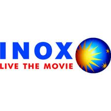

PVR
PVR is the largest and the most premium film entertainment Company in India and is listed as the “Most Trusted Brand” in the Category of Entertainment by the “Brand Trust Report, 2013”. The Company was incorporated in April 1995 pursuant to a Joint Venture Agreement between Priya Exhibitors Private Limited and Village Roadshow Limited, Australia. The Company pioneered the multiplex revolution in the country by establishing the first multiplex cinema in 1997 at Saket, New Delhi.
INOX
 INOX Leisure Limited is the diversification venture of the INOX Group into entertainment. INOX Leisure’s mission is to be the leader in the cinema exhibition industry, in every aspect right from the quality and choice of cinema to the varied services offered and eventually the highest market share. INOX has traversed its own path by bringing in a professional and service oriented approach to the cinema exhibition sector. With strong financial backing, impeccable track record and strong corporate ethos, INOX has established a strong presence in the cinema exhibition industry in a very short span.
Adlabs
BIG Cinemas, a division of Reliance MediaWorks Ltd and a member of Reliance Group is India’s largest cinema chain with over 516 screens spread across India, US and Netherlands and caters to over 35 million consumers. BIG Cinemas has established leadership in film exhibition in India with 253 screens and accounts for 10 to 15% of box office contributions of large movies.

Satyam Cinemas
The three 4 screen independent units that cover the national capital, New Delhi from Patel Nagar, Janak place and Nehru Place are a well-known landmark to every Delhiite and remain synonymous to a complete cinema entertainment. The team at Satyam Cineplexes work hard and creatively to package the finest experience for their consumers. Today this experience is further enjoyed by the people of Indore, Jodhpur, Aurangabad, Rohtak and Mysore. The people of Amritsar, Bhilwara and Bangalore would be welcomed this year to be part of the Satyam Cineplexes experience.
Madhumilan
Mandva is situated in the Vindhyanchal Range at 2000 feet above sea level. There is a deep ravine which separates it from the Malwa Plateau in Central India. Mandav is 100 km from Indore, the nearest airport.The history of Mandav also known as Mandu is known from the Paramara period in the 8th century A.D. Later it was under Mughal rule. They called it Shadiabad, which means ‘The City of Joy’. The monuments are a mix of the Hindu and Afghan style of architecture